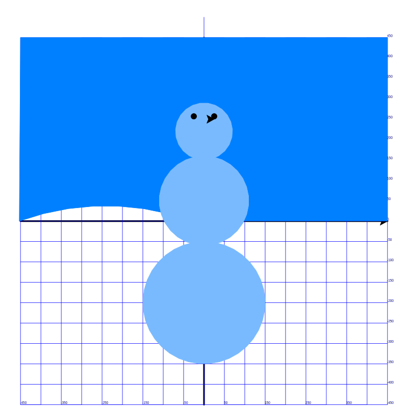

Привет, юный программист! Сегодня мы продолжим изучать мир Python Turtle и дополним красивый рисунок снеговика с фоном неба. На этом уроке ты научишься использовать Python Turtle для рисования фигур, линий и даже цветов. Давай начнем!

Вот список всех важных концепций, которые используются в сегодняшнем коде:
Импорт модуля Turtle
from turtle import *: Эта строка импортирует все функции из модуля turtle, что
позволяет нам рисовать с помощью команд, таких как forward, backward и других.Настройка черепашки
speed(0): Устанавливает скорость рисования на самую быструю.shapesize(2, 2, 1): Изменяет размер черепашки (ширина, длина, контур).shape("turtle"): Меняет внешний вид курсора черепашки на форму черепахи
(необязательно).Движение черепашки
forward(расстояние): Перемещает черепашку вперед на указанное расстояние.backward(расстояние): Перемещает черепашку назад на указанное расстояние.goto(x, y): Перемещает черепашку в конкретную точку (x, y) на экране.setheading(угол): Устанавливает направление черепашки на указанный угол (например, 0 = Восток,
90 = Север).Рисование линий и фигур
left(угол) и right(угол): Поворачивают черепашку влево или вправо на указанный
угол.circle(радиус, длина): Рисует круг с заданным радиусом и необязательной длиной (часть круга).
stamp(): Оставляет копию формы черепашки в текущей позиции.Настройка пера
width(размер): Изменяет толщину пера.color(r, g, b) или color("название_цвета"): Устанавливает цвет пера и
заливки.colormode(255): Позволяет использовать значения RGB (0-255) для цветов.Заливка фигур
begin_fill() и end_fill(): Используются вместе для заливки фигуры текущим цветом
пера.Поднятие пера
penup(): Поднимает перо, чтобы черепашка могла двигаться без рисования.pendown(): Опускает перо, чтобы черепашка начала рисовать снова.Циклы для повторения
for i in range(n): Повторяет блок кода n раз. В этом коде циклы используются для
рисования горизонтальных и вертикальных линий сетки.Экспорт рисунка
getcanvas().postscript(file="имя_файла.eps", x=-500, width=1000, height=1000):
Сохраняет рисунок в формате EPS.Завершение рисования
done(): Держит окно открытым до тех пор, пока ты его не закроешь.Разберем код пошагово:
# Рисуем горизонтальную шкалу
width(4)
forward(450)
stamp()
backward(900)
# Рисуем вертикальную шкалу
forward(450)
left(90)
forward(450)
stamp()
backward(900)
for i in range(19):
setheading(0)
forward(450)
write(i * 50 - 450)
backward(900)
forward(450)
left(90)
forward(50)
right(90)
colormode(255)
color(0, 128, 255)
penup()
goto(450, 0)
pendown()
setheading(160)
circle(700, 40)
begin_fill()
circle(620, 40)
goto(-450, 450)
goto(450, 450)
goto(450, 0)
end_fill()
begin_fill() и end_fill() для рисования и
заливки неба.# Первый круг
color(121, 186, 254)
penup()
goto(0, -50)
pendown()
begin_fill()
circle(150)
end_fill()
# Второй круг
goto(0, -60)
setheading(0)
begin_fill()
circle(110)
end_fill()
# Третий круг
goto(0, 150)
begin_fill()
circle(70)
end_fill()
# Левый глаз
goto(-25, 250)
color("black")
begin_fill()
circle(7)
end_fill()
# Правый глаз
penup()
goto(25, 250)
pendown()
begin_fill()
circle(7)
end_fill()
getcanvas().postscript(file="snowman.eps", x=-500, width=1000, height=1000)
done()
Вот что у нас получилось сегодня:
Отличная работа! Мы продолжим на одном из следующих занятий.
stamp() оставляет копию формы черепашки там, где она вызывается.color(r, g, b).for) делают легким повторение действий, таких как рисование многих линий или кругов.Попробуй изменить код:
Удачи в программировании! 🎉
Давай поговорим о том, как компьютер создает все эти красивые цвета, которые ты видишь на экране. Ты же знаешь, что художники используют краски для смешивания разных цветов? Например, если смешать желтый и синий, получится зеленый. А если взять красный и синий, выйдет фиолетовый. Так вот, компьютер делает то же самое, только он использует три основных цвета: красный (Red), зеленый (Green) и синий (Blue). Именно поэтому этот способ называется RGB.
Красный, Зеленый и Синий – это основные цвета.
Цвета можно "смешивать".
Цифры вместо карандашей.
(255, 0, 0) — это чистый красный (полностью красный, без зеленого и синего).(0, 255, 0) — это чистый зеленый.(0, 0, 255) — это чистый синий.(255, 255, 255) — это белый (все цвета вместе на максимуме).(0, 0, 0) — это черный (никаких цветов).Экспериментируй!
(255, 165, 0) — это оранжевый.(135, 206, 250) — это светло-голубой.(255, 192, 203) — это розовый.В Python Turtle ты можешь использовать RGB, чтобы создавать свои собственные цвета. Например:
color(255, 0, 0) # Ярко-красный
color(0, 255, 0) # Ярко-зеленый
color(0, 0, 255) # Ярко-синий
color(255, 255, 0) # Желтый
Теперь ты можешь выбрать любой цвет, который захочешь, просто меняя числа!
Компьютер может создать более 16 миллионов разных цветов с помощью RGB! Это потому, что каждому из
трех цветов (красный, зеленый, синий) можно задать 256 различных значений (от 0 до 255). И если перемножить эти
значения:
256 × 256 × 256 = 16 777 216 — вот сколько цветов можно получить!
Попробуй придумать свой уникальный цвет! Напиши три числа от 0 до 255 и посмотри, какой цвет получится. Например:
(100, 50, 200)?(50, 200, 100)?Рисуй, экспериментируй и твори! 😊